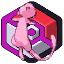

Minecraft 1.21.1 • Fabric • CobblemonCobbleClub Wiki
The official player handbook for CobbleClub: a custom Cobblemon survival adventure built around catching and collecting Pokémon, building a protected home, exploring dedicated Wild Worlds, completing your Pokédex, earning rewards, taking on raids, collecting rare cosmetics and progressing through the server economy.
Getting Started
Everything a new player needs from first join through building a team and home.
Pokémon & Mods
Player-facing mod guide with explanations and official documentation links.
Wild Worlds
Red, Blue, Green and Yellow exploration worlds plus the renewable Resource World.
Economy
PokéDollars, Gems, playtime income, catch bonuses and other rewards.
Kits & Ranks
Newb, Ace, Champion, Master and Legend kits, contents and cooldowns.
Crates
Vote, Shiny and Legendary crates, keys, dolls and exclusive rewards.
Wardrobe
3D hats, wings, floaties, balloons, glow effects and cosmetic customization.
Claims
Protect your builds, manage claim blocks and understand player protection.
Player Commands
A player-only reference for the commands you actually need to play CobbleClub.
Raids
How raid content fits into progression and what to expect inside raid encounters.
FAQ
Quick answers to common CobbleClub gameplay questions.